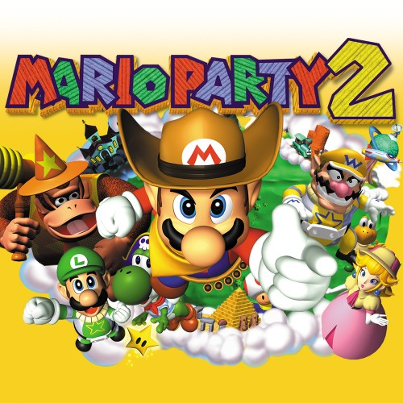

Mario Party 2
En Mario Party 2, los jugadores se sumergen en una fiesta llena de diversión y competencia con los personajes más icónicos del Reino Champiñón. Con seis tableros temáticos y más de 60 minijuegos, este título expande la fórmula original con nuevos disfraces, mecánicas estratégicas y eventos aleatorios que pueden cambiar el rumbo de la partida. Ya sea compitiendo en carreras, duelos o desafíos de habilidad, la emoción y la rivalidad están aseguradas en cada turno. Con su multijugador caótico y su factor sorpresa, Mario Party 2 es un clásico atemporal para disfrutar con amigos y familiares.
- Mini (Minijuegos variados y frenéticos)
- Turn (Juego basado en turnos)
- Dice (Uso de dados para moverse)
- Star (Recolecta estrellas para ganar)
- Duel (Modo de enfrentamientos uno a uno)
- Luck (Eventos aleatorios que cambian la partida)
Precio: $30.990
Comprar